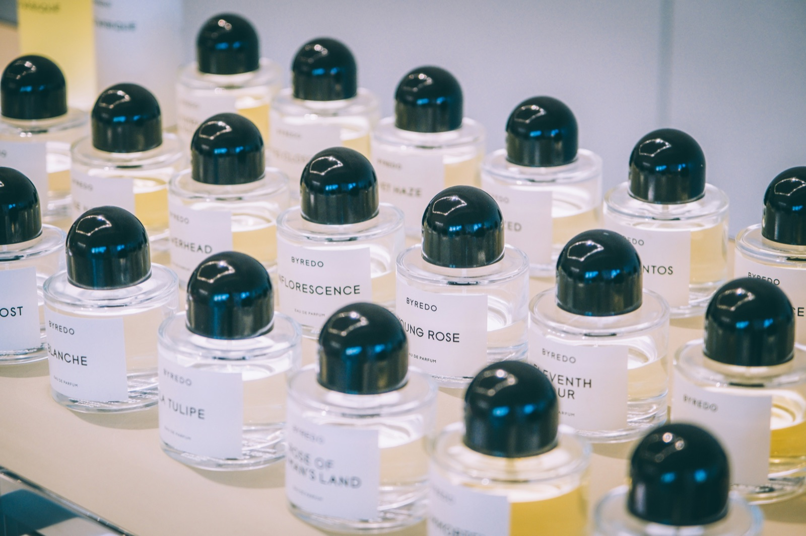

Your customer is deciding whether to pick up a tester or walk past it. The soundtrack is shaping that decision right now.
Cosmetics retail depends on dwell time, product testing, and perceived quality. Audio affects all three, and nobody is measuring it.

What We Measure
Beauty retail amplifies the effect of audio because customers touch, test, and linger. The decision to stay or leave happens fast, shaped by sensory signals the customer rarely identifies consciously. Gueguen and Jacob (2013) found that mood-congruent music in a retail setting increased customer spending by 28.6%, from EUR 25.31 to EUR 32.55. That was a flower shop. Beauty retail, where sensory environment shapes every purchase decision, is at least as susceptible. Entuned measures the outcomes that matter.
How long customers spend at testing stations, fragrance walls, and treatment counters. Music affects perceived time. When the audio environment encourages unhurried browsing, customers stay long enough to test a second product. Every additional minute of browsing increases the probability of a multi-product purchase.
Whether customers move from browsing to testing. The transition from looking at packaging to opening a tester is the behavioral threshold that predicts conversion. Yalch and Spangenberg (2000) found that familiar music makes shoppers leave 8% faster. Your browsing customers need unfamiliar background that encourages lingering, not recognizable tracks that signal time passing.
Whether customers add a second or third item. Areni and Kim (1993) showed that classical music in a wine store increased average bottle price purchased. The mechanism transfers directly to cosmetics: audio that reinforces quality perception shifts customers toward premium selections and larger baskets.
Beauty purchases are identity purchases. Customers form quality judgments from the total sensory environment. Andersson et al. (2012) found that incongruent music actively reduces willingness to pay. Not neutral. Negative. A disconnect between your brand's visual positioning and its audio environment erodes the premium perception your merchandising team works to build.
How Entuned Works for Cosmetics Retail
We start with your customer. Not "beauty shoppers" as a demographic, but the specific person your store exists to serve. Their aesthetic sensibility, their relationship to luxury, whether they are discovery-oriented or replenishment-driven. That psychology becomes the foundation for every musical decision.
The compositions we build are original and license-free. They are calibrated to encourage product interaction, reinforce the quality positioning your brand has built, and create the kind of environment where a customer stays long enough to discover something new.
Your fragrance counter does not serve the same customer mindset as your skincare wall. The treatment area does not serve the same mindset as the checkout queue. Each zone gets its own soundtrack. Entuned integrates with RetailNext traffic and dwell time analytics, so every decision is driven by what your customers actually do, not what a playlist curator assumes they want to hear.
Implementation Overview
Psychographic profiling session. We learn your customer's identity, your brand positioning, and your competitive context. You share your floor plan, zone layout, and any existing RetailNext or analytics integration.
First soundtrack built and shared for review. Zone-specific compositions if applicable. Refinement based on your team's feedback on brand fit and energy calibration.
Go live. Streaming connects to your existing speaker system via Bluetooth or AirPlay. Behavioral measurement begins through your POS and RetailNext integration from day one.
Monthly cycles with fresh compositions informed by performance data. Dwell time, conversion, and transaction value tracked continuously against the audio environment that produced them.
What we need from you
Point-of-sale access for measurement. A floor plan or zone layout. RetailNext or equivalent analytics access if available. Any existing audio direction or brand guidelines you want us to respect.
Schedule a Consultation
See how Entuned works for beauty retail. The pilot is free and the measurement is rigorous.
Ask About a Pilot ProgramSee also: How It Works · The Science · Pilot Program
Other verticals: Apparel · Home Goods